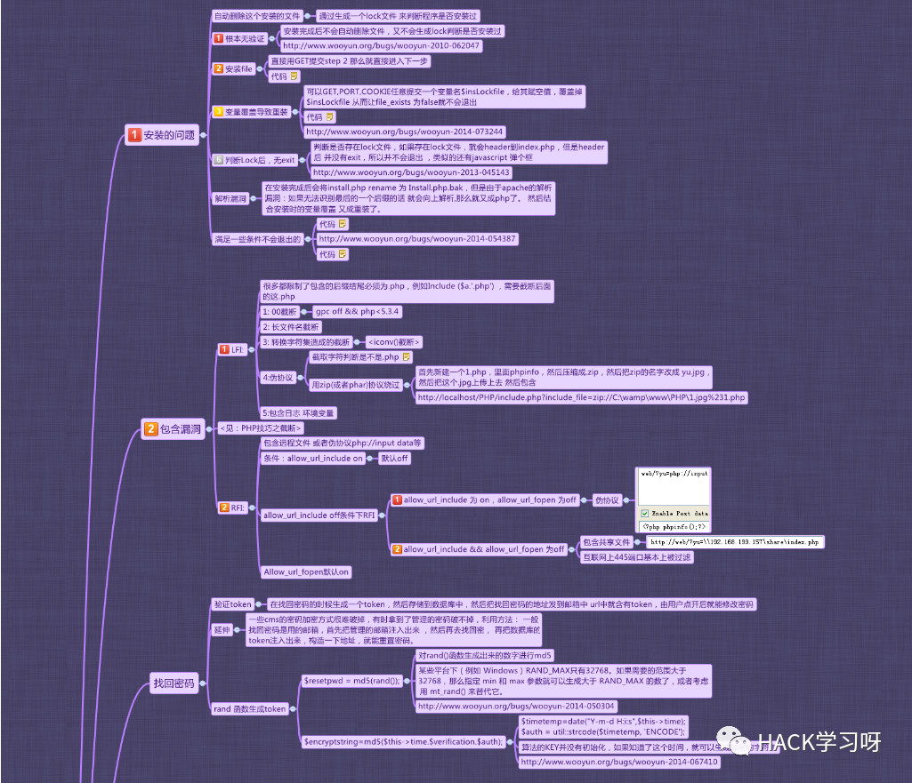
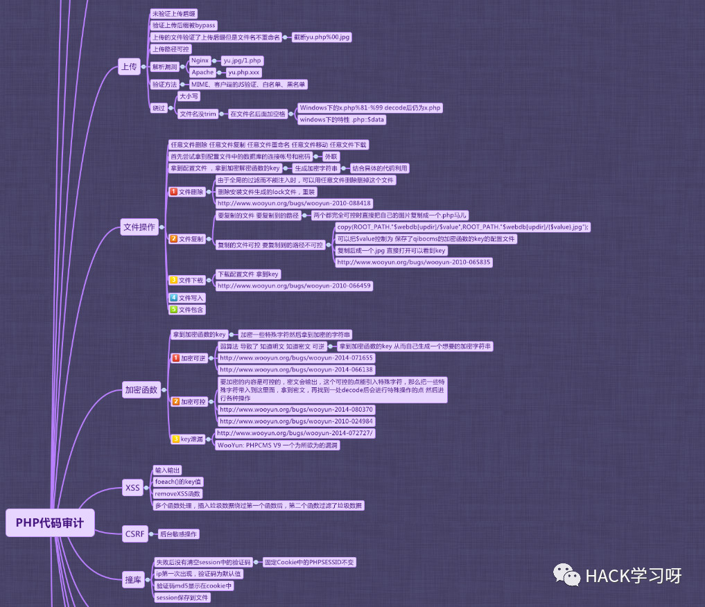
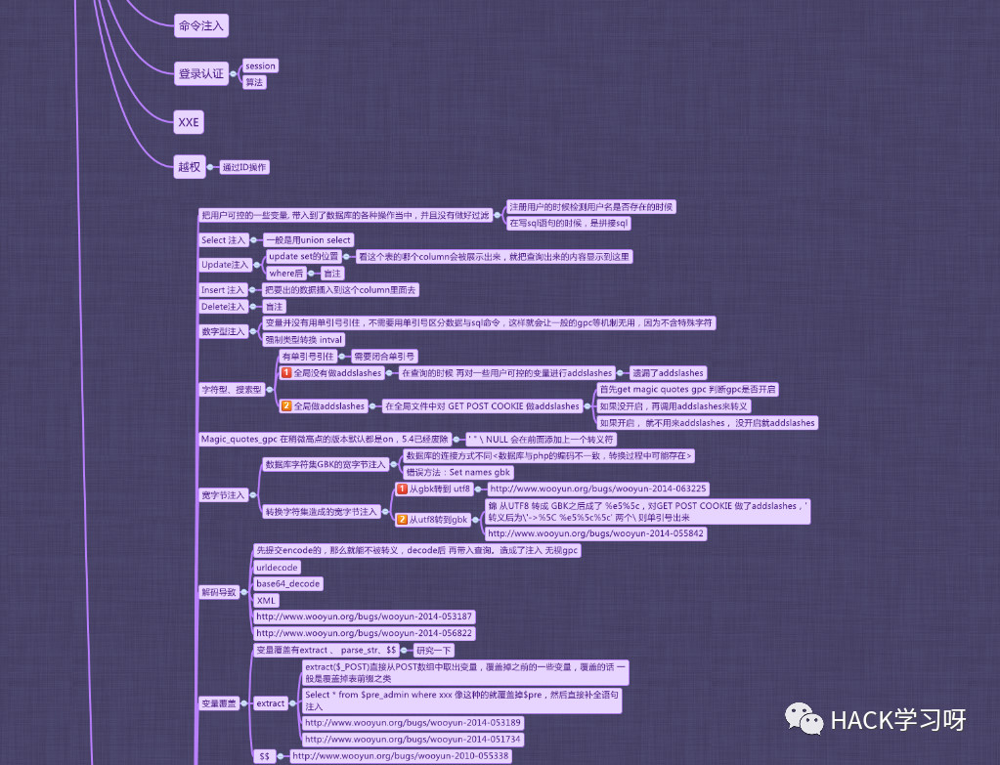
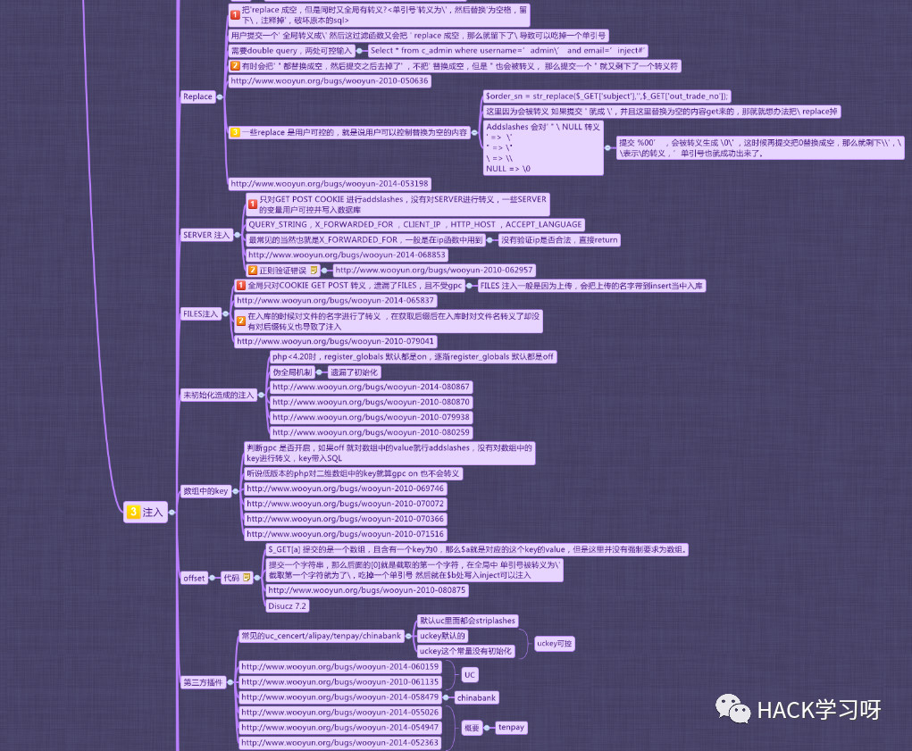
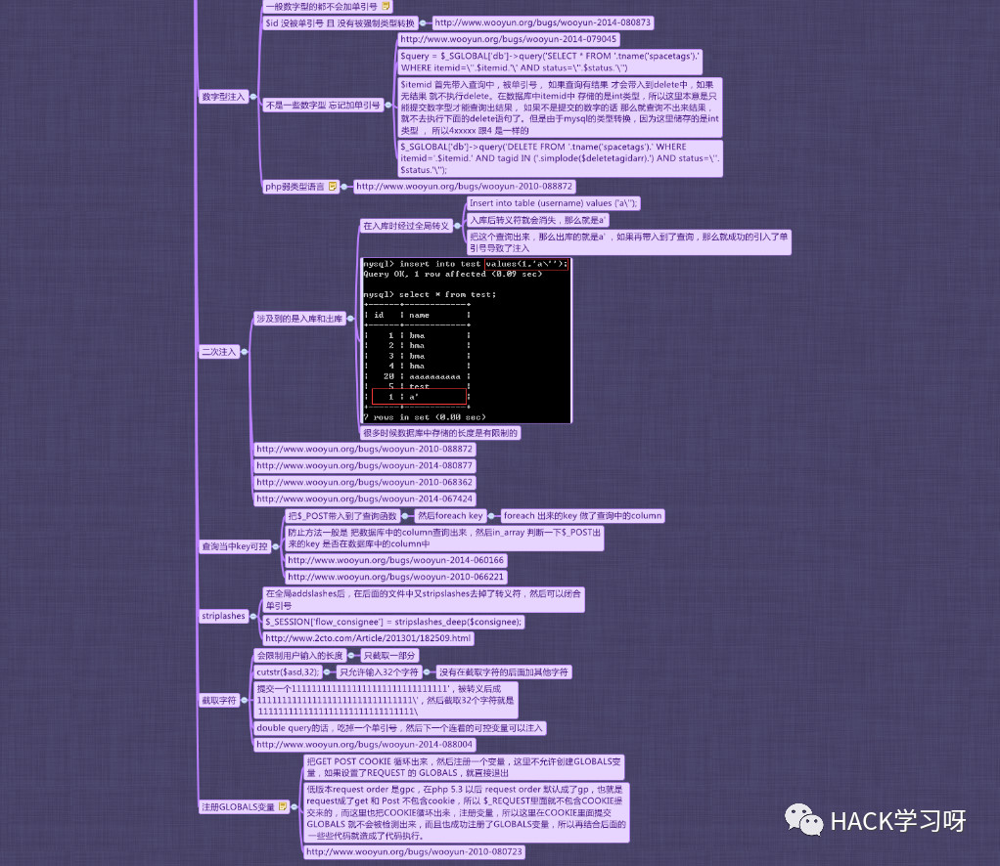

代码审计 | 利用思维导图快速读懂框架和理清思路
一.编程语言
1.前端语言
html/javascript/dom元素使用，主要是为了挖掘xss漏洞，jquery 主要写一些涉及到CSRF脚本使用的或者DOM型XSS，JSON劫持等
2.后端语言
基础语法要知道，例如 变量类型,常量,数组(python 是列表,元组,字典)，对象,类的调用,引用等， MVC设计模式要清楚,因为大部分目标程序都是基于MVC写的，包括不限于php，python，java。
不用会写，但是一定能看懂，而且要看懂逻辑，知道哪些功能点会用什么方式去写,可能会出现什么类型漏洞，方便挖掘常规类型漏洞，更方便挖掘逻辑漏洞
二.渗透技巧
1：工具渗透
例如sqlmap，awvs，burpsuite等
为什么使用工具
能用工具挖掘到你还人工审计干什么及辅助调试
2: 手工渗透
3: 原因
为什么要懂渗透技巧
其一在于你找到漏洞的时候，通常的开发功底是不足以构造PAYLOAD的，需要一些特殊的PADYLOAD构造方式。
其二你在找漏洞时，可以辅助你更快的去挖掘漏洞
三.辅助技术
1.协议
例如HTTP传输方式,dict:// file://等,懂得Header头如何伪造 比如XFF注入时的x-forward-for,cookie注入,CRLF身份请求伪造等。
2.程序搭建
你审计时要学会程序搭建,不然静态审计时，无法进行动态调试,方便你更快更高效挖掘漏洞
3.URL链接构造或者URL路由
4.SQL语句及数据库特性
这个主要涉及到SQL注入及sql注入的payload构造绕过
5.中间件及服务器特性
有的代码漏洞 是基于中间件及服务器特性造成的
例如IIS6.0的解析
IIS7.5的解析漏洞等等
nginx的解析漏洞等
6.审计辅助工具
①IDE，phpstrom 审计工具追踪代码时用到，可与xdebug绑定使用方便调试
②源代码审计工具 rips，seay审计工具，辅助你更快的找到漏洞产生点
四.漏洞挖掘
1.懂得漏洞类型产生原理
2.懂得危险函数的参数不当使用可造成的漏洞威胁 例如涉及到命令执行代码执行的eval,assert,array_map,usort等，例如本身函数的脆弱性,is_numeric,md5等
3.熟悉php函数的脆弱性 比如==与=== ，===并不是强大无比不可绕过的,也要结合代码设计逻辑
4.php的淫技技巧
5.php版本及配置不当结合函数不当利用造成的漏洞威胁
6.成长阶段：demo案例练习->已出漏洞代码审计案例分析->小型cms单一漏洞实例练习->小型cms漏洞多种类型漏洞实例挖掘练习->框架漏洞挖掘实例练习->技巧挖掘
不要觉得代码审计很容易，也不要觉得代码审计很难。重在坚持，重在分析，你做到了，0day就在眼前
五.思维导图





六.常用审计步骤
源码
做白盒审计当然就必须的拥有源码。
获得源码的渠道很多、开源的都可以官方下载、某云、互站、源码论坛等等、某mycodes……
环境
审计代码并不只是简单地阅读代码、还需要搭建环境进行实际测试
当然，你能用大脑推算运行结果的话就当我没说。
有些时候、可以是单一环境、但有些特定的漏洞需要一来不同的操作系统、不同的web服务软件的版本。
最好准备不同的环境，用虚拟机挂着几个环境就好。
同时phpstudy这个环境包也支持一键切换程序版本。
安装
搭建好本地环境、配置好数据库等相关设置。
初始化安装程序。
用submlie text打开源码文件夹
网站目录结构
主目录
模块目录
插件目录
上传目录
模板目录
数据目录
配置目录
配置文件
公共函数文件
安全过滤文件
Index入口文件
大概看一下、对整套源码程序有一个了解。
Index文件
Index文件一般是整个程序的入口，详细读一下index文件可以知道程序的架构、运行流程、包含那些配置文件，包含哪些过滤文件以及包含那些安全过滤文件，了解程序的业务逻辑。
配置文件
一般类似config.php等文件
保存一些数据库相关信息、程序的一些信息。
先看看数据库编码，如果是gbk则可能存在宽字节注入。
如果变量的值用双引号、则可能存在双引号解析代码执行的问题。
来源数据的处理
然后、通过详读 公共函数文件 和 安全过滤文件 等文件，清晰掌握用户输入的数据，哪些被过滤，哪些无过滤，在哪里被过滤了，如何过滤的，能否绕过过滤的数据。
过滤的方式是替换还是正则？有没有GPC？有没有使用addslasher()处理？
敏感函数参数回溯
大多数漏洞产生的原因是由于函数的使用不当造成的。所以，根据敏感函数来逆向追踪参数的传递过程是比较有用的一种审计方法。
略懒的我一般直接用Seay法师大大的神器 Seay源代码审计系统 ，相关用法我就不说了。
主要是利用正则匹配一些高危函数、关键函数以及敏感关键字。
然后分析判断敏感函数的上下文，追踪参数源头。
尝试控制可控的参数变量。
定向功能分析法
该方法主要是根据程序的业务逻辑来说审计的。
首先是用浏览器逐个访问浏览，看看这套程序有那些功能。
根据相关功能，大概推测可能存在那些漏洞。
常见功能漏洞：
程序初始安装
绕过install.lock逻辑
站点信息泄漏
物理路径
服务器相关信息
组建相关信息
文件上传
任意文件上传漏洞
文件名注入
文件管理
任意文件操作
任意文件读取
跨目录浏览
文件名XSS
任意文件覆盖
登陆认证
Cookie算法破解
绕过认证
任意用户登陆
万能密码
数据库备份恢复
下载数据库备份文件
执行SQL语句
Sql导出一句话
找回密码
Token破解
重置管理员账户
验证码
验证码爆破
验证码绕过

推荐阅读：
50个代码审计的案例源码，可以拿来自己练手学习
https://github.com/imsebao/Code-Audit
内容参考：adminxe's blog